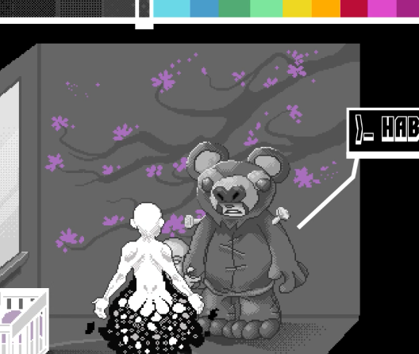
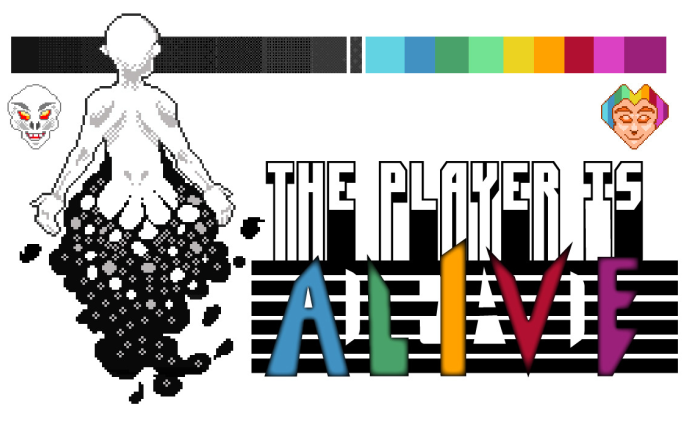
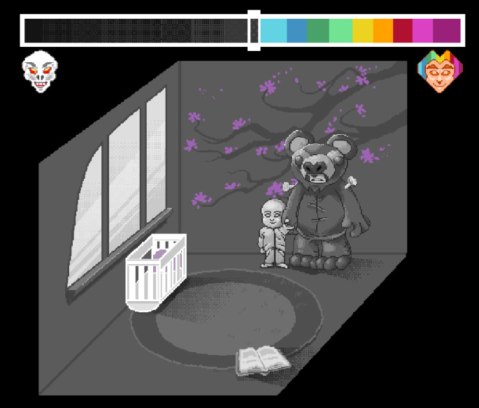
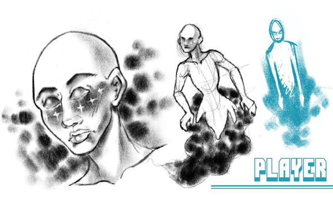
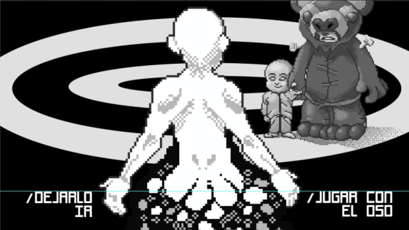

Este videojuego experimental esta basado en el concepto del experimento del gato de Schrödinger, el cual crea una paradoja en la cual nosotros como espectadores, no sabemos si dentro de la caja un gato está vivo o muerto, por lo tanto, sin la verificación, el animal está vivo y muerto al mismo tiempo.
A partir de esta paradoja, la historia empezó con esta premisa: “Un personaje tiene que recolectar fragmentos de su alma para ir recuperando sus recuerdos y saber si está vivo o muerto.” Y comenzando desde lo sencillo, armé tanto el logo que mantiene esta estética 'dual' de la historia como los assets en pixel art, los cuales están hechos con una paleta de color mínimalista. El toque sombrío que le da al juego en sus primeras pantallas contrasta con la estética juguetona del logo, lo cual nos dá a entender que puede haber más acerca de la historia de lo que aparenta.
Guión: Carla Daria.
Programación: Lis Banhof.
2018
ASSETS PARA VIDEOJUEGO EN PIXEL ART
Cliente: Cátedra Groisman (ARG)



